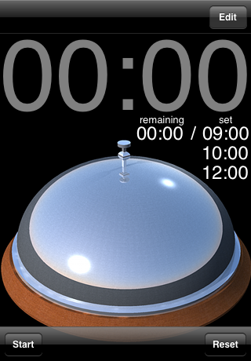
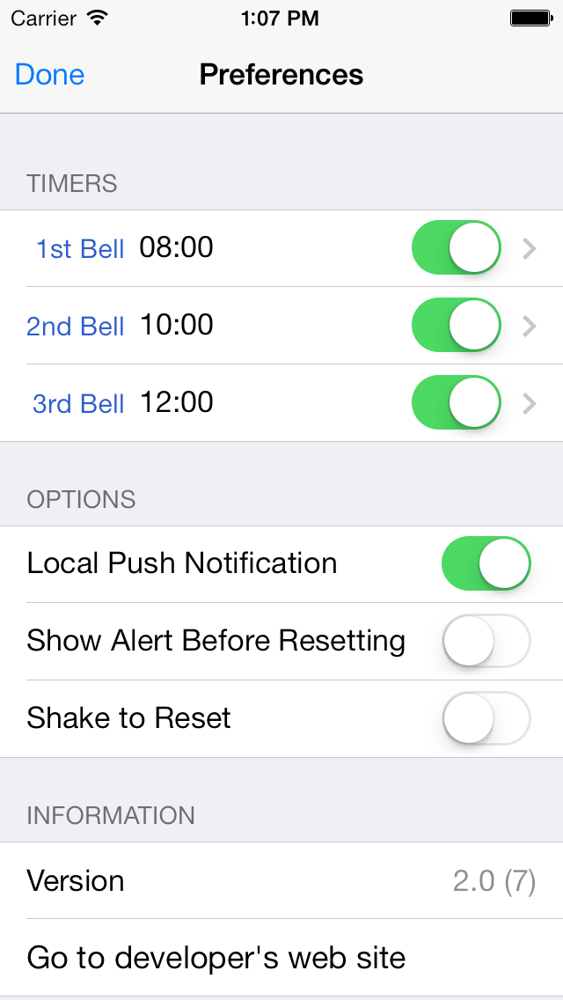
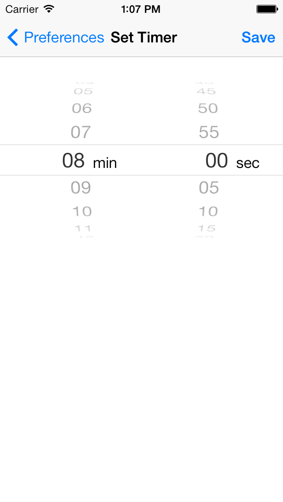

Version History
- 2013-11-08, ver. 2.0.1
- Improved visual feedback for buttons
- 2013-10-19, ver. 2.0
- Optimized for iOS 7
- 2010-09-30, ver. 1.2.2
- Fixed iPad crush bug
- 2010-09-21, ver. 1.2.1
- New Bell Sound
- 2010-09-08, ver. 1.2
- Added support for Task Switching
- Added support for Local Notification
- 2010-08-04, ver. 1.1
- Changed the maximum number timers to 3
- New Bell images
- New Application icons (Support Retina display and iPad)
- 2010-07-27, ver. 1.0.1
- New Bell images
- Changed the interval time to 5 seconds
- 2010-7-12, ver. 1.0
- First release